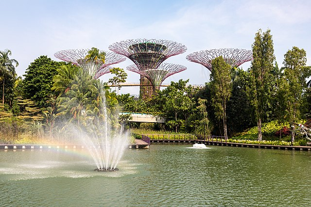
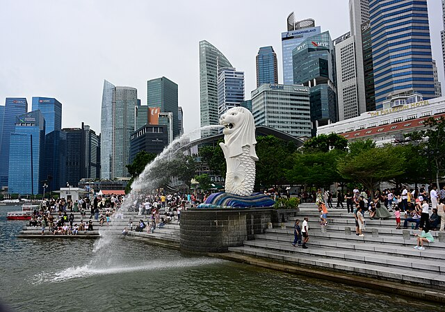
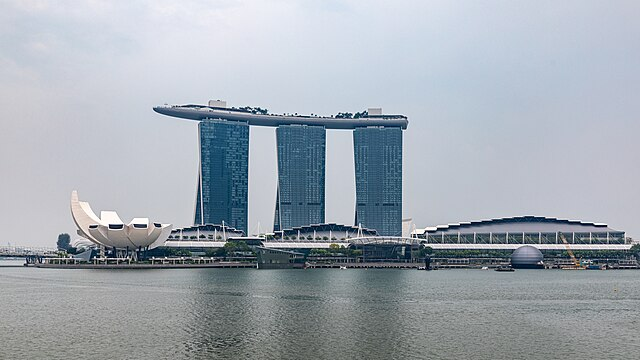
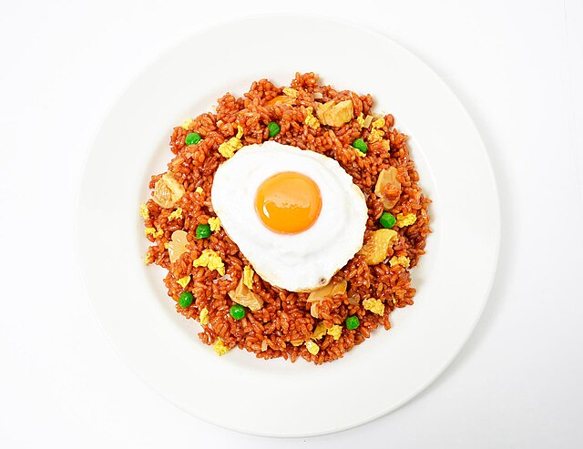

Singapore
A bustling country filled with street food and malls, Singapore is perfect for people who love warm weather, delicious food, and city-life.
Places worth visiting:
- Gardens by the Bay - filled with heaps of stuff to do, such as the Cloud Forest, a light show, and the beautiful Flower Dome.

Gardens by the Bay - Dietmar Rabich - Wikimedia Commons - CC BY SA
- Merlion Park - A park with a merlion fountain, this park is a well-known landmark in Singapore and overlooks the city.

Merlion Park - Ashwin Kumar - Wikimedia Commons - CC BY SA
- Marina Bay Sands - this gravity-defying building is awe-inspiring, and is an exclusive hotel with a pool overlooking the city.

Marina Bay Sands - Dietmar Rabich - Wikimedia Commons - CC BY SA
Popular Food and Drinks:
- Nasi Goreng - A delicious rice dish which consists of chicken, kecap manis (a sweet soy sauce), and vegetables.

Nasi Goreng - JoeCh8 - Singaporely.com - CC-BY
- Milo Dinosaur - A sweet, chocolatey drink with a heap of chocolate powder on top, Milo Dinosaur is delicious and great for those with a sweet-tooth!
- Rose Bandung - Rose Bandung is a floral, sweet drink, with a beautiful pink colour.

Rose Bandung - Mieszko9 - DreamsTime - Public Domain
If you want to learn about another country, click one of these links!
Germany
England
California
Rarotonga
Home